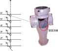
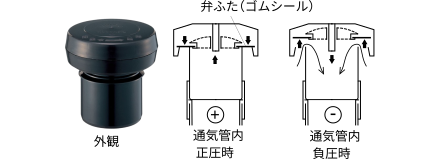

2024年
問題132 排水通気設備に関する語句の組合せとして，最も不適当なものは次のうちどれか．
（1）特殊継手排水システム ホテルの客室系統に適用
（2）通気弁 寒冷地の集合住宅に適用
（3）排水鋼管用可とう継手 排水用硬質塩化ビニルライニング鋼管の接続
（4）プールのオーバフロー排水 排水口開放として排水
（5）即時排水型ビルビット設備 排水槽の悪臭防止に有効
2024年
問題132 正解（4） 頻出度AAA
プールの水は人の身体に触れ，口にも入るので，そのオーバフロー排水は，既定の排水口空間を取らない簡易間接排水である「排水口開放」ではだめである（2024-132-1表参照）．正規の「間接排水」として，排水の逆流を防止してプール水を汚染から守る．
2024-132-1表 間接排水とする器具等
| 区分 | 機器名称 | |
| サービス用機器 | 飲料用 | 水飲み器，飲料用冷水器，給茶器，浄水器 |
| 冷蔵用 | 冷蔵庫，冷凍庫 ，その食品冷蔵・冷凍機器 | |
| 厨房用 | 皮むき機，洗米機，製氷器，食器洗浄機，消毒器，調理用，流し（食材を溜め洗いするシンク等） | |
| 洗濯用 | 洗濯機◎，脱水機◎，洗濯機パン◎ | |
| 医療･研究用機器 | 蒸留水装置，滅菌水装置，滅菌器，滅菌装置，消毒器，洗浄機等 | |
| 水泳プール | プール自体の排水，オーバフロー排水，ろ過装置逆洗水，周辺歩道の床排水◎ | |
| 噴水 | 噴水自体の排水◎，オーバフロー排水◎，ろ過装置逆洗水◎ | |
| 配管・装置の排水 | 貯水槽・膨張水槽のオーバフロー及び排水 上水・給湯・飲料用冷水ポンプ及び露受け皿の排水◎ 上水・給湯・飲料用冷却水系統の水抜き 圧力水槽用逃がし弁及び貯湯槽からの排水 消火栓系統及びスプリンクラー系統の水抜き◎ 冷凍機◎，冷却塔◎，熱媒として水を使用する装置及び空気調和機器の排水◎ 上水用水処理装置の排水 | |
| 温水系統等の排水 | 貯湯槽・電気温水器からの排水 ボイラ◎，熱交換器◎及び蒸気管のドリップ等の排水◎ |
|
※ ◎印は，「排水口開放」でも良い機器．
排水口開放とは，排水が飛び散るのを嫌ったり，スペース的に困難な場合に，規定の排水口空間を取らない，簡易間接排水方法のことである．飲食関係や人が直接触れる水受け容器の間接排水としては認められていない（2024-129-1図参照）．

-(1) 特殊継手排水システム（2024-131-2図参照）は，通気量が限られるので，枝管への接続器具数があまり多くない集合住宅，ホテルの客室系統等に多く採用される．

写真出典 SEKISUI CHEMICAL CO., LTD
https://www.eslontimes.com/system/items-view/31/
同システムは，伸頂通気方式を改良したもので，排水横枝管の接続に特殊継手を用いる．
特殊継手は，内部に旋回羽根を持ち，各横枝管からの排水を立て管の内面に旋回流で流し，流速を抑えるとともに管中央部に通気のための空間を確保して，排水をスムースに流そうとするものが多い．
-(2) 通気弁は空気の吸込みのみを行い，管内の負圧を緩和する．排気はできないので正圧の緩和できない（2024-132-3図参照）．

左側写真 出典 SANEI株式会社
https://www.sanei.ltd/?type=item&s=%E9%80%9A%E6%B0%97%E5%BC%81
通気弁は臭気を漏らさないので屋内に設置できる．冬季開口部が凍り付いてしまうスウェーデンで開発された．可動部分があるので定期的に点検する必要があり，点検しやすい場所に設けるか，又は天井内等に設置する場合は点検口を設ける．
-(3) 排水用硬質塩化ビニルライニング鋼管はねじ切りができないので，接続には排水鋼管用可とう継手（MD継手）（2024-132-4図，2024-132-1表参照）を使用する．

出典 「せつびのぶろぐ」
http://setsubinoblog.seesaa.net/
2024-132-1表 主な排水用管材
| 管種・名称 | 用途 | 備考 |
| 排水用鋳鉄管 | 汚水，ちゅう房排水用 | 耐食性は大であるが，重い．メカニカル形と差し込み形がある． |
| 配管用炭素鋼管（水配管用亜鉛メッキ鋼管） | ちゅう房排水を除く雑排水管，通気管 | 黒管と白管のうち，排水用には白管を用いる．腐食しやすい． |
| 排水用硬質塩化ビニルライニング鋼管 | 汚水，雑排水用 | 鋳鉄管に比べ軽く取扱いが容易．ねじ切りはできない．排水鋼管用可とう継手（MD継手）と組合せて使用する． |
| 硬質ポリ塩化ビニル管（VP管，VU管） | 埋設管に広く使用される．一般にはVPを使用する． | 水圧試験圧力VP：2.5MPa，VU：1.5MPa． 伸縮による疲労割れが起こりやすい． |
| 排水用耐火二層管 | 排水，通気管用 | 外管：繊維モルタル管内管：硬質ポリ塩化ビニル管 |
| 鉄筋コンクリート管 | 一般には下水道で使用される． | 敷地内では，外圧が大きい場合の埋設管として用いる． |
-(5) 即時排水型ビルピット設備は，排水槽の悪臭防止に有効である（2024-132-5図）．